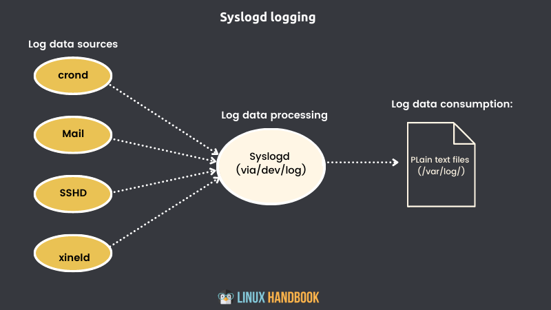

几十年来，Linux 日志记录一直由 syslogd 守护进程管理（注意 rsyslogd 是 syslogd 的新版本，是一个东西）。
Syslogd 将收集系统进程和应用程序发送到 /dev/log 的日志消息。然后它将消息定向到 /var/log/ 目录中适当的纯文本日志文件。
Syslogd会知道将消息发送到哪里，因为每条消息都包括包含元数据字段（包括时间戳、消息来源和优先级）的标头。

除了 Syslogd 外， Linux 日志记录现在也由 journald 纪录，这个以后再介绍。
syslogd 系统上的事件生成的所有日志都添加到 /var/log/syslog 文件中。但是，根据它们的标识特征，它们也可能被发送到同一目录中的一个或多个其他文件。
在 syslogd 中，消息的分发方式由位于 /etc/rsyslog.d/ 目录中的 50-default.conf 文件的内容决定。
下面这个 50-default.conf 的例子表示 cron 相关的日志信息将被写入 cron.log 文件。星号(*)告诉 syslogd 发送具有任何优先级的条目（而不是像 emerg 或 err 这样的单一级别）：
cron.* /var/log/cron.log处理 syslogd 日志文件不需要任何特殊工具，例如 journalctl。但是如果你想在这方面做得很好，你需要知道每个标准日志文件中保存了什么样的信息。
下表列出了最常见的 syslogd 日志文件和他们所纪录的信息。
| 文件名 | 内容 |
|---|---|
| auth.log | 系统认证和安全事件 |
| boot.log | 启动相关事件的记录 |
| dmesg | 与设备驱动程序相关的内核环缓冲区事件 |
| dpkg.log | 软件包管理事件 |
| kern.log | Linux 内核事件 |
| syslog | 所有日志的集合 |
| wtmp | 跟踪用户会话（通过 who 和 last 命令访问） |
此外，个别应用程序有时会写入自己的日志文件。您还会经常看到为接收应用程序数据而创建的完整目录，如 /var/log/supervisor/ 或 /var/log/mysql/。
除了您之前看到的 * 符号（适用于所有优先级）之外，还可以通过八个优先级中的任何一个来控制日志重定向的文件路径。
| 等级 | 描述 |
|---|---|
| debug | 有助于调试 |
| info | 信息性 |
| notice | 正常情况 |
| warn | 需要警告的情况 |
| err | 错误情况 |
| crit | 危急情况 |
| alert | 警报，需要立即采取行动 |
| emerg | 系统无法使用 |
默认情况下，syslogd 在后台处理日志轮换、压缩和删除，无需您提供任何操作。但是你应该知道它是如何完成的，以防你有需要特殊处理的日志。
如果您的日志必须留存较长时间，那么您肯定想知道如何通过关键文件找到自己需要的内容。
要查看logrotate系统的运行情况，列出 /var/log/ 目录的一些内容。例如，auth.log 文件以三种不同的格式出现：
auth.log - 目前处于活动状态的版本，新的授权信息被写入其中。
auth.log.1 -最近一次被轮换掉的文件。它以未压缩的格式保存，以便在必要时更容易快速调用它。
auth.log.2.gz - 已压缩以节省空间的较旧的日志文件(如下图中的.gz扩展名的文件)。
7天后，下一次轮换日期到来时，auth.log.2.gz会更名为auth.log.3.gz，auth.log.1会被压缩并更名为auth.log.2.gz，auth.log将变为 auth.log.1，并且将创建一个新文件并命名为 auth.log。
默认日志轮换周期在 /etc/logrotate.conf 文件中控制。下面配置中所示的值表示在一周后轮换文件，并在四周后删除旧文件。
# rotate log files weekly
weekly
# keep 4 weeks worth of backlogs
rotate 4
# create new (empty) log files after rotating old ones
create
# packages drop log rotation information into this directory
include /etc/logrotate./etc/logrotate.d/ 目录还包含自定义配置文件，用于管理单个服务或应用程序的日志轮换。列出该目录的内容，您会看到以下配置文件：
$ ls /etc/logrotate.d/
apache2 apt dpkg mysql-server
rsyslog
samba
unattended-upgrade您可以查看他们的内容以了解他们对日志轮换的配置。
应该完全避免使用 cat 。它只会在您的屏幕上显示数千行内容。
我建议使用 grep 过滤文件中的文本。
使用 tail -f 命令可以实时读取当前日志文件。您可以将其与 grep 结合使用以过滤所需的文本。
在某些情况下，您可能需要访问旧的压缩日志。您可能总是先解压文件，然后使用 grep、less 和其他命令来读取其内容，但是，有更好的选择。有 zcat、zless 等 z 命令可让您处理压缩文件而无需先解压它们。
这是一个示例，它将通过 auth.log 文件搜索登录尝试失败的证据。搜索单词 failure 将返回包含短语 authentication failure 的所有行
偶尔检查一下可以帮助您发现通过猜测正确密码来登录你的Linux系统的企图。管理员可能将密码输错一两次，但太多次的密码输入错误就需要警惕起来：
$ cat /var/log/auth.log | grep 'authentication failure'
Sep 4 11:00:37 workstation sshd[2740141]: pam_unix(sshd:auth): authentication failure; logname= uid=0 euid=0 tty=ssh ruser= rhost=121.46.19.30
Sep 4 11:00:38 workstation sshd[2740140]: pam_unix(sshd:auth): authentication failure; logname= uid=0 euid=0 tty=ssh ruser= rhost=121.46.19.30 user=root
Sep 4 11:00:38 workstation sshd[2740148]: pam_unix(sshd:auth): authentication failure; logname= uid=0 euid=0 tty=ssh ruser= rhost=121.46.19.30 如您所知，grep 为您完成了这项工作，但您从结果中只能看到身份验证失败。要是能知道涉及谁的帐户会更有用。您可以通过告诉它包含匹配之前和之后的行来扩展 grep 返回的结果。
此示例打印匹配及其之前和之后的1行。它告诉你有人使用帐户 ubuntu 尝试使用 su（切换用户）登录 root 帐户失败：
$ cat /var/log/auth.log | grep -C1 failure
Sep 4 22:43:43 hongdaokeji su: pam_unix(su:auth): Couldn't open /etc/securetty: No such file or directory
Sep 4 22:43:43 hongdaokeji su: pam_unix(su:auth): authentication failure; logname=ubuntu uid=1000 euid=0 tty=pts/2 ruser=ubuntu rhost= user=root
Sep 4 22:43:46 hongdaokeji su: FAILED SU (to root) ubuntu on pts/2